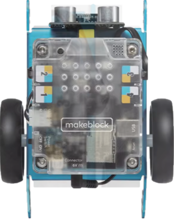
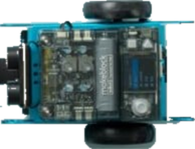

Choisissez votre éditeur
Programmez en blocs, en français, puis envoyez votre programme à la carte ou au robot.
micro:bit
L'éditeur micro:bit simplifié : blocs, simulation et envoi à la carte, sans séances ni robots.
Blockly de base
L'éditeur seul, sur ce poste : blocs, simulation et envoi à la carte, blocs d'intelligence artificielle (image et son).
Mode classe
L'éditeur de référence. Séances et exercices servis aux postes de la salle par le PC du professeur.
Plateforme
Comptes professeur et élève, séances et évaluations, suivi de la classe. Essai sur ce poste.

mBot1
Carte mCore : les blocs deviennent du C++ Arduino. Simulation, mode direct et envoi au robot.

mBot2
Carte CyberPi : les blocs deviennent du MicroPython. Simulation et envoi au robot par le câble.
Frise chronologique
Construire une frise chronologique : périodes, événements, export PNG et PDF.
Résistance des matériaux
Simulateur 3D : traction, flexion, torsion et cisaillement, avec plusieurs matériaux (acier, bois, PLA…).
Fermette
Comportement mécanique d'une charpente : sollicitations, matériaux et limites de charge, de la 5ᵉ à la 3ᵉ.
Aucune application affichée : cliquez sur une pastille pour la réafficher.